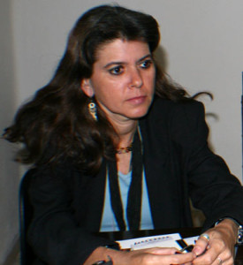

Porque no soy ducho en esos menesteres de abrir la caja del reloj y sopesar sus engranajes prefiero admirar el lienzo y no mirar su envés. No me ha sido dado el don especial de los redescubrimientos, de manera que la poesía tiene tanto misterio para mí que prefiero no asustarme con polisemias feroces.
Una mujer que escribe despacio –ya se ha dicho- y publica más despacio aún. Teresa confiesa no trabajar muchas veces sobre un mismo texto. No es su modus operandi -término dado a criminales- pulir largamente como orfebre su poema. Prefiere sembrarlo y esperar que brote la yema insolente y así, segura de esa vida propia, se decide a publicarlo.
A Teresa, su poesía, su leyenda (¿no son acaso la misma cosa?) la conozco de toda la vida, desde los tiempos de F y 3ra cuando se sentaba con Edel Morales, Fernando Cabrejas, Frank, Yarman, o escuchaba con su amigo Karim las canciones de Silvio y las de Mali o en la Escalera infinita con León, Odette, Grettel Arrate, Marta Mosquera, Sergio Pereda, o en aquel apagón de Matanzas del que no quiero acordarme o en el taller Literario al que algunas veces fue y que Aida Barh dirigía con esa peculiar manera de no querer dirigirlo todo. Y aunque yo no estaba, estábamos muchos desde entonces. La vida se ha encargado de demostrarlo en esta mujer que defiende las audacias.
Humilde, porque no considera para sí el derecho de dictar decretos absolutos. Sencilla, porque aún tiene tiempo para plantar el jardín del patio junto a su madre y urdir alguna travesura tardía con sus hermanos y porque escucha con atención las preguntas a veces incontestables de Daniela. Trabajadora incansable, no solo por su labor como directora y editora de la risso que tantos bienes –más que males- hiciera y hace a escritores y lectores sino también por su vocación de promotora de espacios para dar oportunidad y protagonismo a muchos jóvenes creadores en gentil mecenazgo. Enferma por no poder callar. Condenada a escribir.
Nos unen muchas cosas: la conga de Los Hoyos, atronador piano en su invasión desde Martí y Moncada a los cofines del mundo; la amorosa amistad por los muertos redivivos Joel James, Cos Cause, Sergio Infante entre otros con los que intentamos recomponer el mundo de los vivos. Y entre los vivos León Estrada, ser bello en toda su estatura, Lescay un artista de la creación humana y allende los mares el inefable Sergio Fernández Cedeño, compartidor y hacedor de sueños. Que dios los tenga en la tierra mucho tiempo. Nos une el nombre de Daniela dado a su hija su mejor poema y a mi nieta mi mejor poema. Nos unen los abuelos trasatlánticos el de ella gallego, el mío asturiano, emparentados en la aventura de poner escalones a la Gran Piedra. Nos une Santiago y los años que compartimos juntos tratando de hacer mejor cultura, aconsejándonos mutuamente y dándonos golpes duros contra los obstáculos como suele suceder.
Ella acompañada por esa milicia invisible –e invencible- poetry, al decir de Manzano y que considera su mejor premio ”los ojos húmedos de quienes leen sus poemas” cuando bordea “esos abismos tan difíciles de tocar que son los del corazón del hombre” con una poesía que es un dardo de doble punta que hiere a la diana y a la arquera.
Declaradamente optimista Teresa no calla ante el desmán que intenta ningunear la acción creadora, por eso ha dejado cargos importantes, que no le importan mucho pues sabe que de todas formas siempre hay una obra por hacer fuera de las oficinas.
Teresa Melo es quizás la única mujer que vive en el Oriente cubano,-entendiendo este como todo lo que está fuera de La Habana- que haya obtenido el premio Nicolás Guillén. El jurado de esa edición conformado por Nancy Morejón, Sigfredo Ariel y Norberto Codina apostó por Las Altas Horas un poemario que creo urge volverse a publicar, no porque no pueda ser superado por ella, sino porque es un referente a mi modo de ver del quehacer de esa generación, grupo o promoción como quiera llamarse a ese emporio de los ochenta. Y estamos en tiempos en que los referentes deberían ser muy importantes para las nuevas hornadas.
Ella se confiesa heredera en cierto modo de los mejores retazos de Lezama, Marti, Lorca, Cavafis, Elliot, Novás, Huidobro, capitana de la Estrella de Cuba, aquella memorable expedición de un grupo de iracundos defensores de la poesía. Hace unos años al frente del Encuentro de poetas del caribe, evento de la Fiesta del Fuego, que inventara con su desenfado proverbial nuestro Jesús, el Cos, y cuya organización vitalicia testó a favor de Teresa Melo quien cada julio reúne y une a poetas de todas latitudes. Y aunque le toma mucho tiempo y desazones a veces, lo hace con la pasión de quien escribe el poema de su vida.
Hoy se desempeña laboralmente en la Fundación Caguayo, una institución que trabaja denodadamente por preservar y engrandecer la memoria y el acervo cultural de Santiago. Allí es alma que crea, promueve y enaltece a cuánto vale.
Teresa Melo ha sido directora de Ediciones Santiago y del Centro Provincial del Libro, vicepresidenta de la Uneac en su provincia, miembro de Consejos editoriales de importantes revistas especializadas, ha publicado una decena de libros y plaquettes. Ha recibido numerosos premios y reconocimientos por su obra. Antologada profusamente y antologadora profusa.
Una mujer que dice creer en la belleza de los colores de su luz de patria y en la belleza de los gladiolos que nacen en su tierra.
Quiero terminar leyendo un despacho del periódico Sierra Maestra. Había pasado el ciclón Sandy devastadoramente por Santiago
SM)-La poeta y escritora Teresa Melo acaba de convertir su hogar en Casa Cultural para beneficio de la comunidad en la nueva urbanización de esta ciudad, conocida como Altos del 30 November. El proyecto comunitario Casa Cultural funciona así desde el pasado 25 de octubre en la residencia de Melo ubicada en los Altos del 30 November, un reparto casi completamente de nuevas construcciones, donde aún no se han levantado las instituciones culturales
Nuestra luz de patria. Yo creo en ella.
Pedro López Cerviño
Junio de 2015


Recent Comments